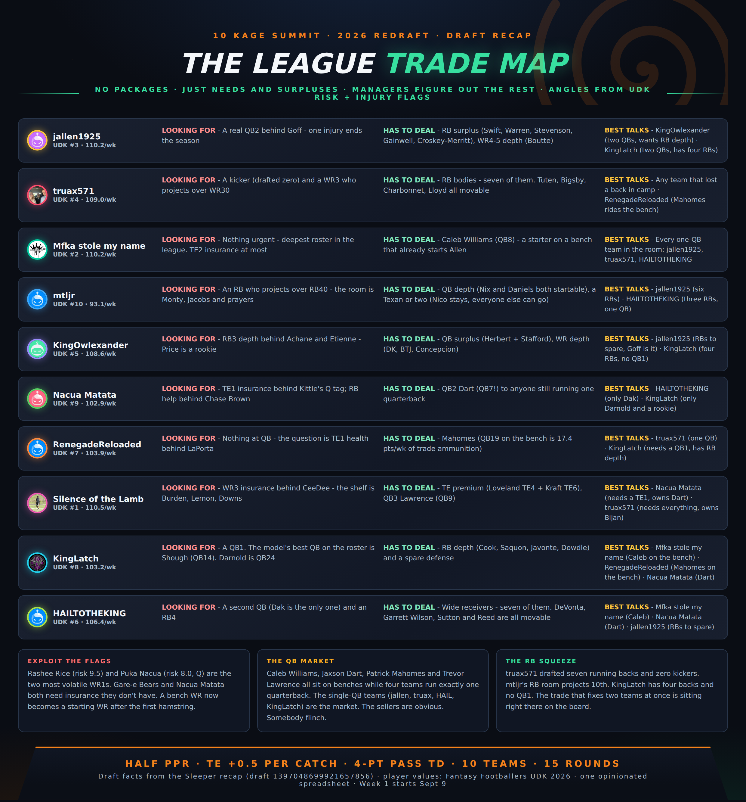
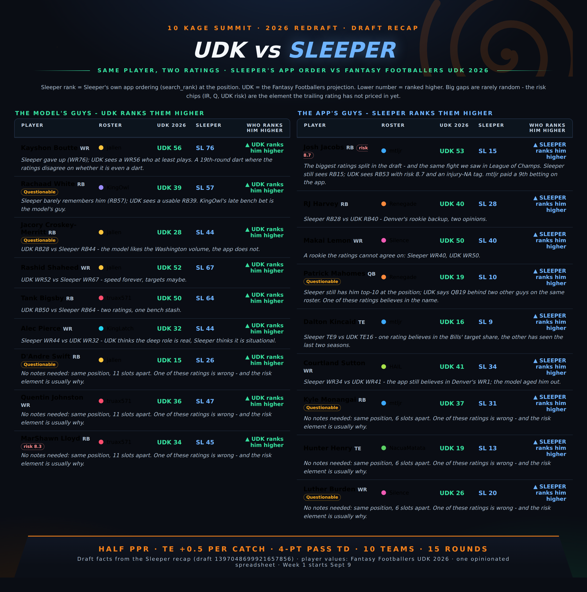
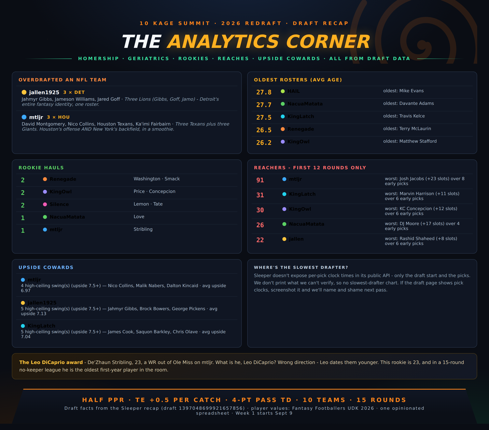
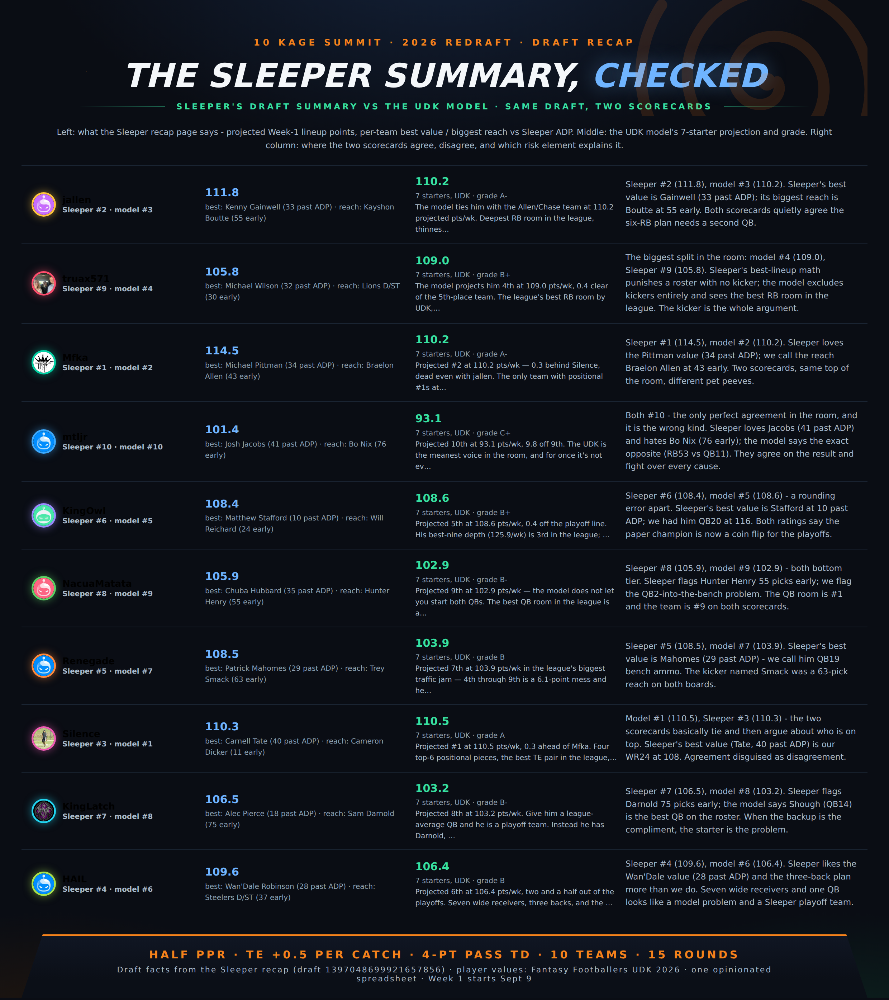

10 Kage Summit · 2026 redraft · draft recap
Draft night was a running back riot
150 picks, 15 rounds, no keepers. 12 RBs in the first 22, the UDK QB1 fell to 23, a kicker named Smack was drafted, and David Montgomery went 4th overall. Every claim is a UDK 2026 projection (Fantasy Footballers) scored to this league, or a fact from the Sleeper draft recap — no last-season stats.
150 picks15 roundsHalf PPRTE +0.54-pt pass TD2 flexUDK 2026
01 · Draft night — the running back riot

02 · Team tags, grades, verdicts

03 · Best RBs overall — the power board

04 · QB rooms — depth counts

05 · RB rooms — depth counts

06 · WR rooms — depth counts

07 · TE rooms — the premium position

08 · Every team, every position — UDK rank vs Sleeper rank

09 · Report cards 1.01-1.05

10 · Report cards 1.06-1.10

11 · Predicted final standings

12 · Awards night

13 · The smack pack (rated R)

14 · The league trade map

15 · UDK vs Sleeper — the ratings disagreements

16 · The analytics corner

17 · The Sleeper summary, checked

Half PPR · TE +0.5 per reception · 4-pt pass TD · 2 flex · 4 playoff teams · Week 1 starts Sept 9
Draft facts from the Sleeper recap (1397048699921657856). Player values: Fantasy Footballers UDK 2026 projections (updated Sept 6). No 2026 games have been played.
Draft facts from the Sleeper recap (1397048699921657856). Player values: Fantasy Footballers UDK 2026 projections (updated Sept 6). No 2026 games have been played.